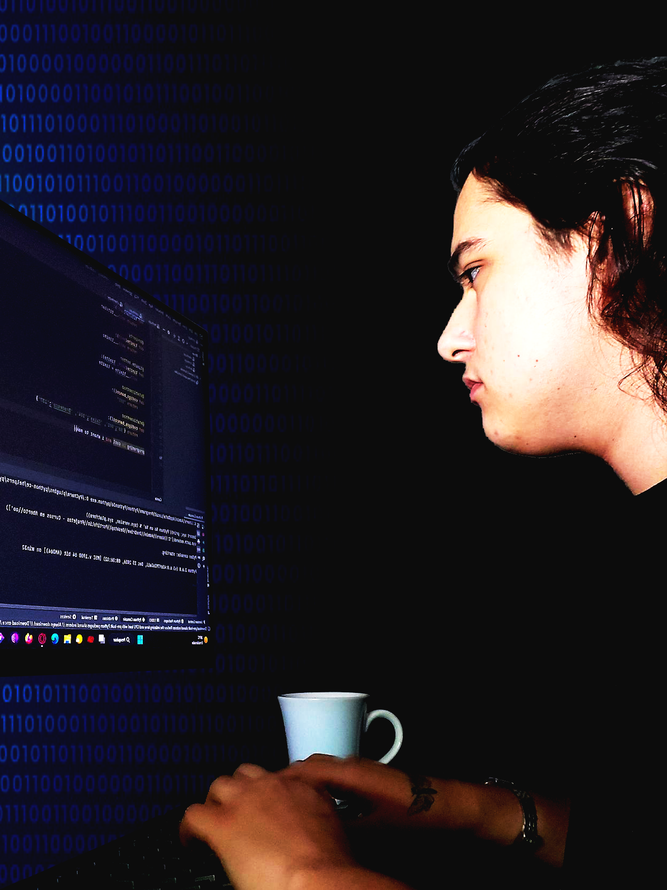

Sobre Mim:
Desde cedo, desenvolvi um profundo interesse pela tecnologia. Me lembro quando era mais jovem e abria o código-fonte dos sites, fazendo algumas alterações no Chrome DevTools. Na minha curiosidade, experimentei brevemente conceitos como DDOS (neste caso, apenas em minha própria rede). Ao longo do tempo, me mantive atualizado sobre as tecnologias mais recentes, e esta busca pelo conhecimento se tornou uma parte intrínseca do meu dia a dia. A simples ideia de um futuro cada vez mais tecnológico continua a despertar cada vez mais minha paixão e entusiasmo por esta área.
Aprendi a programar através da Alura, pesquisando, vendo videos e principalmente abrindo os programas e brincando. Entendo que ainda tenho um longo caminho a trilhar pela frente, por isso decidi entrar na faculade de Ciências da Computação em 2023!
Objetivos:
Estou a procura de oportunidades na área de programação, seja em estágio ou jovem aprendiz, considerando meus conhecimentos de HTML, CSS, JavaScript, Python, Java e SQL(MySQL e PostgreSQL). Meu objetivo é aprender mais sobre estas tecnologias além de ter um gostinho do mercado de trabalho na minha futura área de profissão.